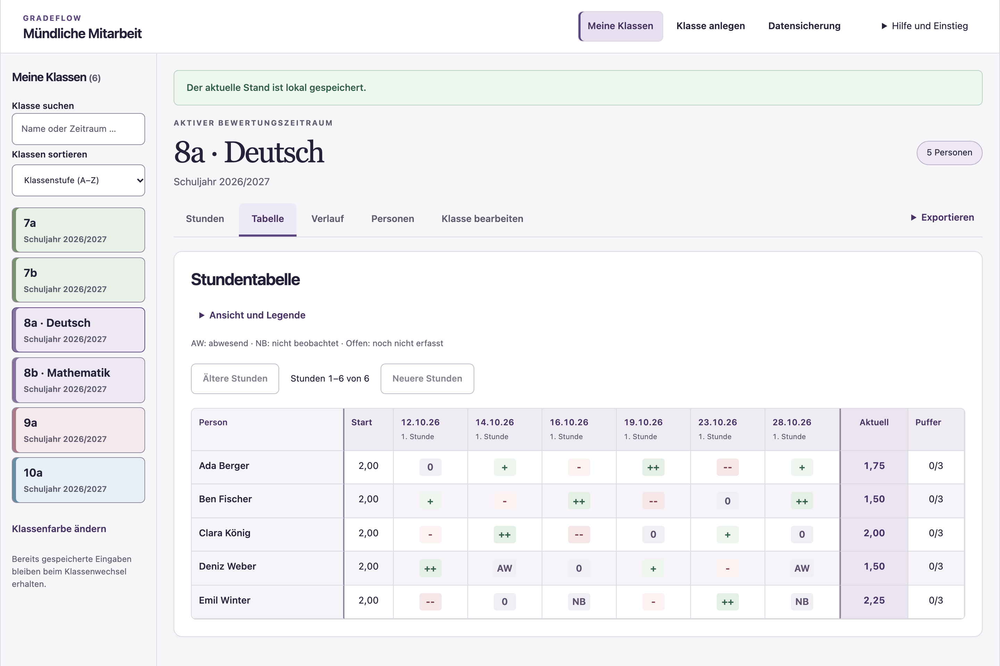
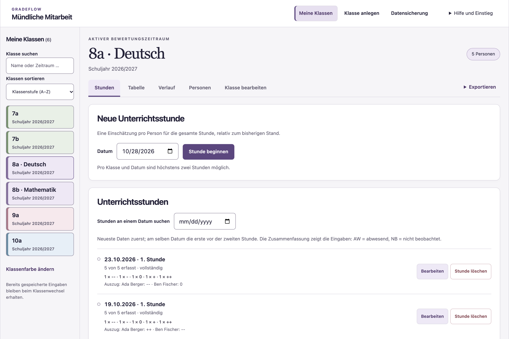
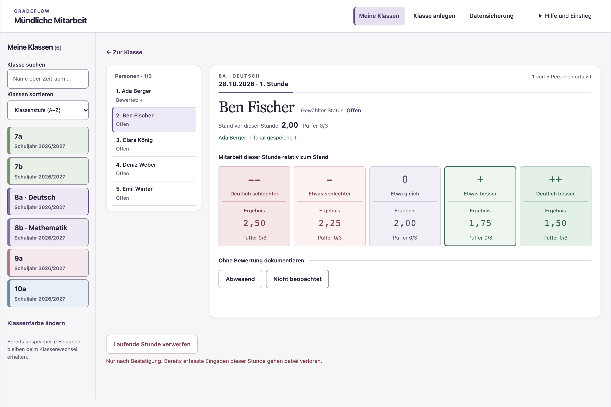
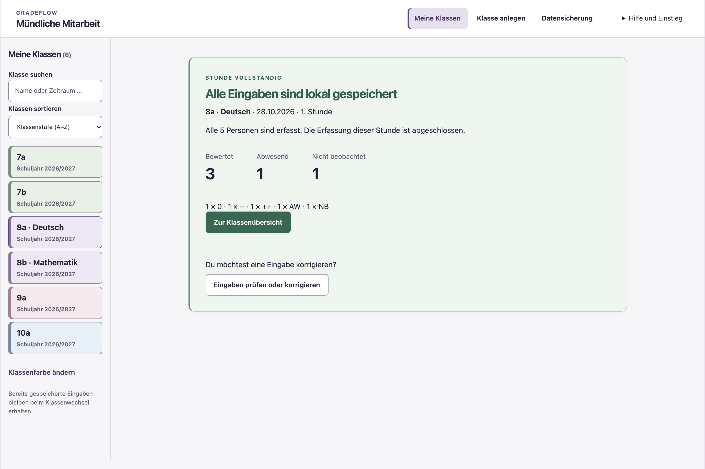
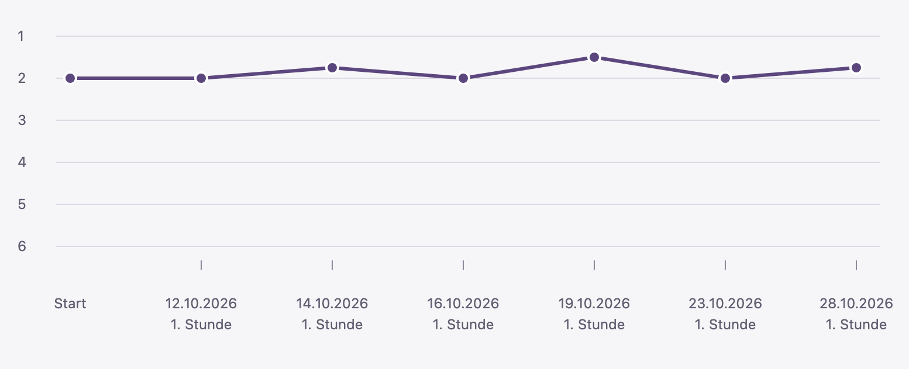
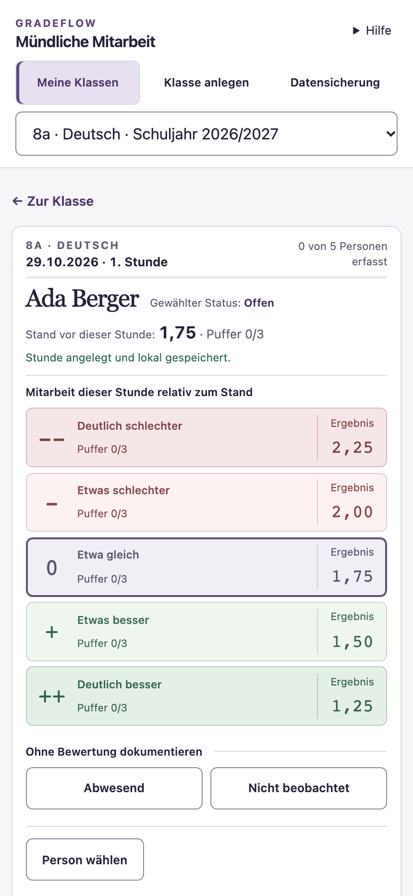
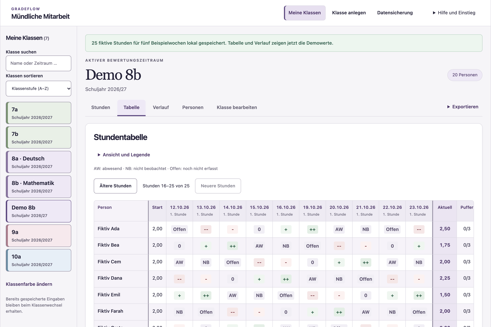

MÜNDLICHE MITARBEIT
Viele Stunden.Ein nachvollziehbarer Verlauf.
Gradeflow dokumentiert die Entwicklung im Unterricht.

01 / ORIENTIERUNG
Die richtige Klasse.Sofort.
Pastellfarben zuordnen. Reihenfolge selbst wählen.

Nach Klassenstufe, zuletzt benutzt oder am längsten nicht benutzt.
02 / DOKUMENTATION
Eine Person.Eine Stunde.
Die Gesamtleistung der Stunde einschätzen – relativ zum bisherigen Stand.


03 / KONKRETES BEISPIEL
Was bedeutetein „+“?
Ada wurde etwas besser eingeschätzt als ihr bisheriger Stand.
„+“ ist eine relative Einschätzung. Das Beispiel startet bei 2,00.
04 / KLARE ZUSTÄNDE
Auch ohne Bewertungeindeutig.
Abwesenheit und fehlende Beobachtung getrennt dokumentieren.

Beide verändern den Stand nicht. Eine vollständige Stunde wird klar bestätigt.
05 / NACHVOLLZIEHBARKEIT
Entwicklungwird sichtbar.
Klassenübersicht und persönlicher Verlauf. Auch frühere Eingaben lassen sich korrigieren.
ADA BERGER · PERSÖNLICHER VERLAUF

ALLE PERSONEN IM BLICK
06 / EXPORT
Von der Klassezur einzelnen Person.
Eine Excel-Datei mit Klassenübersicht und einem Tabellenblatt je Person.
VORSCHAU DER EXPORTIERTEN EXCEL-DATEI
8a · Deutsch
Bewertungszeitraum · Schuljahr 2026/2027
| Person | Startwert | Aktuell | Puffer |
|---|---|---|---|
| Ada Berger | 2,00 | 1,75 | 0 |
| Ben Fischer | 2,00 | 1,50 | 0 |
| Clara König | 2,00 | 2,00 | 0 |
| Deniz Weber | 2,00 | 1,50 | 0 |
| Emil Winter | 2,00 | 2,25 | 0 |
Die Namen verlinken direkt auf das jeweilige Personenblatt.
07 / INDIVIDUELL
Dein Unterricht.Deine Übersicht.
App-Farbe selbst wählen. Klassen in Pastelltönen ordnen.


25 fiktive Stunden – auf Wunsch ergänzen.
Erst die Demo-Klasse anlegen. Danach die Beispielwerte erstellen.
08 / DATEN
Lokal gespeichert.Bewusst gesichert.
Der Bestand liegt im jeweiligen Browser. JSON regelmäßig herunterladen und geschützt aufbewahren.

Keine automatische Synchronisierung zwischen Geräten.
MÜNDLICHE MITARBEIT IM UNTERRICHT
Gradeflow.
Beobachten.
Dokumentieren.
Nachvollziehen.
Die pädagogische Entscheidung bleibt bei der Lehrkraft.
Bachelorarbeitsprototyp · Version 0.10.0